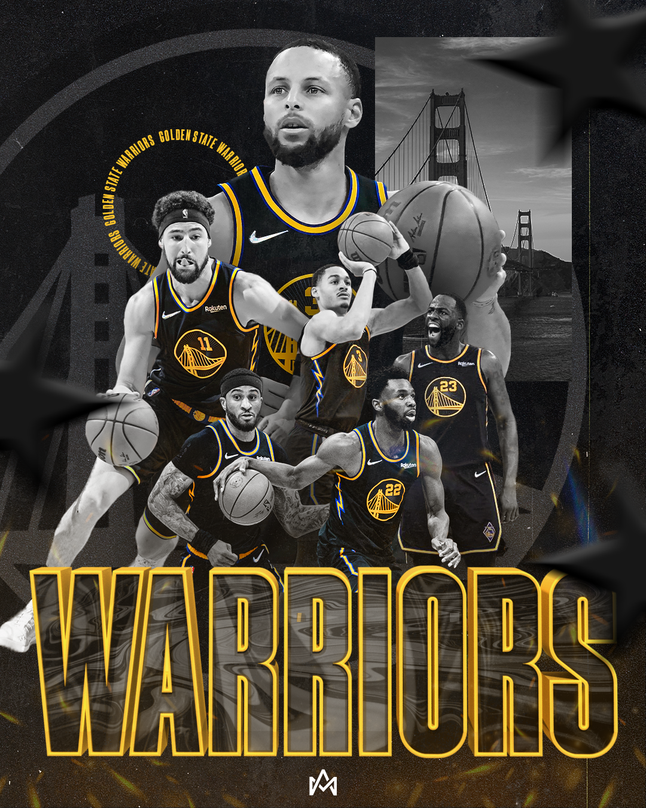

Following my internship with the Los Angeles Sparks and the growth I made
in graphic design, I started creating personal graphics based around sports to
continue growing in skill. Some graphics are of players I like across different
sports, players that had strong game performances, teams that accomplished some
kind of record, etc. I also created an Instagram account to post these to, in order
to share them with others--you can find it here!

CJ Stroud (June 2022)
CJ Stroud coming for that Heisman Trophy & National Championship & Number 1 Overall Pick. Watch out for him this year!!
King of the Jungle (July 2022)
Joe Burrow no longer has an appendix but he is coming back for that Super Bowl ring this season!!
DBook (July 2022)
A graphic to honor the NBA 2K23 Cover Athlete and the curse of not winning a title that comes with it.
Fernando Tatis Jr. (July 2022)
An incredibly powerful and exciting player -- can't wait for this dude to recover from his injury and get back on the field!
Jaylen Brown (June 2022)
An impressive playoff run by Jaylen Brown! He and Jayson Tatum are going to OWN the East for a long time *popcorn emoji*.
Give This Man His Money (April 2022)
Judge turns down a massive contract offer, then turns around and plays his best baseball...get this dude his money.
GSW (May 2022)
I strongly dislike the Warriors but I love their all-black uniforms and the sleek darkness I worked with on this one.
MVP Giannis? (April 2022)
Yet another impressive season by Giannis! Probably deserved another MVP, but what do I know!
A Showdown For The Ages (April 2022)
Disclaimer: This graphic was made before the Celtics absolutely rocked the Nets and sent them back home EARLY.

Jimmy Buckets & BAM (April 2022)
I'm not a Heat fan but BOY do I love these guys and this team--they are just so exciting to watch.
LeBron James Drops 50 (March 2022)
37 years old and leading the league in scoring! LeBron's making a good argument in the GOAT conversation!
Phoenix Locks Up The 1 Seed (March 2022)
With win number 60 on the season, the Pheonix Suns locked up the best record in the NBA, along with home-court advantage throughout the playoffs. Get the popcorn ready, folks!
Joey B (February 2022)
The Savior of my beloved Cincinnati Bengals franchise wins NFL Comeback Player of the Year. Here's to many more Super Bowl runs, and maybe even an MVP along the way!
Jalen Ramsey (November 2021)
Ironically, I made this graphic before the Rams beat my Bengals in Super Bowl LVI. But, you can't argue with the facts that Jalen Ramsey is the best cornerback in the league!